В общем случае линия может состоять из любого количества сегментов, соединенных друг с другом, и каждый сегмент может быть прямым или изогнутым. Для создания объекта линии на холсте C используйте:
id = C.create_line(x0, y0, x1, y1, ..., xn, yn, option, ...)
Линия проходит через серию точек (x0, y0), (x1, y1), ...(xn, yn).
Опции включают:
Таблица 10. Опции объекта линии на холсте
activedashactivefillactivestippleactivewidth |
Эти параметры определяют значения dash, fill, stipple и width, используемые, когда линия активна, то есть когда указатель мыши находится над ней. |
arrow |
По умолчанию линия не имеет стрелок. Используйте arrow=tk.FIRST, чтобы получить стрелку в точке (x0, y0) линии. Используйте arrow=tk.LAST, чтобы получить стрелку в крайней точке. Используйте arrow=tk.BOTH для стрелок в обоих концах. |
arrowshape |
Кортеж (d1, d2, d3), описывающий форму стрелок, добавленных параметром arrow. По умолчанию (8,10,3) . |
capstyle |
Вы можете указать форму концов линии с помощью этой опции; см. раздел 5.12, "Стили концов и соединений". Опция по умолчанию tk.BUTT. |
dash |
Для создания пунктирной линии укажите эту опцию; см. раздел 5.13, "Шаблоны пунктира". По умолчанию отображается сплошная линия. |
dashoffset |
Если указана пунктирная линия, то по умолчанию задается начало указанного шаблона с начала линии. Опция dashoffset позволяет указать, что начало шаблона пунктира происходит через определенное расстояние после начала линии. См. раздел 5.13, "Шаблоны пунктира". |
disableddashdisabledfilldisabledstippledisabledwidth |
Параметры dash, fill, stipple и width, используемые, когда элемент находится в состоянии tk.DISABLED. |
fill |
Цвет, используемый при рисовании линии. По умолчанию fill='black'. |
joinstyle |
Для линий, состоящих из более чем одного сегмента, эта опция управляет внешним видом соединения между сегментами. Подробнее см. раздел 5.12, "Стили концов и соединений". Стиль по умолчанию tk.ROUND. |
offset |
Для пунктирных линий эта опция используется для согласования шаблона пунктира элемента с шаблонами соседних объектов. См. раздел 5.14, "Согласование шаблонов пунктира". |
smooth |
Если True, линия рисуется как набор параболических сплайнов, подходящих к набору точек. По умолчанию False, что отображает линию как набор прямых сегментов. |
splinesteps |
Если параметр smooth установлен в True, каждый сплайн рисуется как определенное количество прямых сегментов. Параметр splinesteps указывает количество сегментов, используемых для приближения каждого участка линии; по умолчанию splinesteps=12. |
state |
Обычно элементы линии создаются в состоянии tk.NORMAL. Установите эту опцию в tk.HIDDEN, чтобы сделать линию невидимой; установите ее в tk.DISABLED, чтобы сделать ее нереагирующей на указатель мыши. |
stipple |
Чтобы нарисовать пунктирную линию, установите эту опцию в рисунок, определяющий шаблон пунктира, например, stipple='gray25'. См. раздел 5.7, "Битовые изображения" для возможных значений. |
tags |
Если это строка, линия помечается этой строкой. Используйте кортеж строк, чтобы пометить линию несколькими метками. См. раздел 8.4, "Теги холста". |
width |
Ширина линии. По умолчанию 1 пиксель. См. раздел 5.1, "Размеры" для возможных значений. |